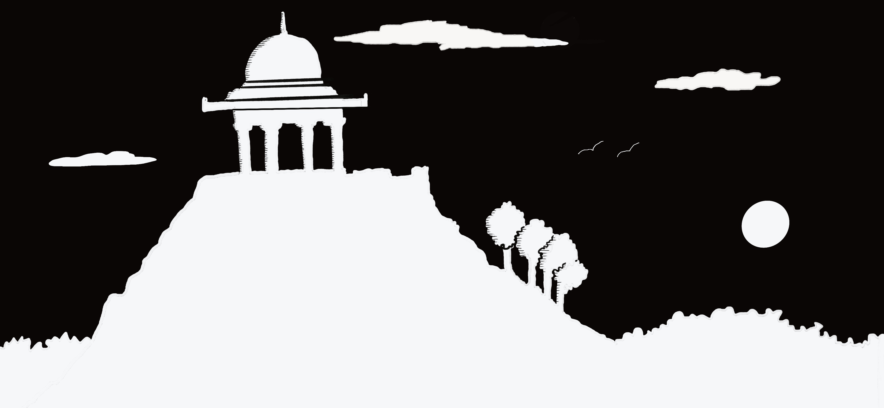
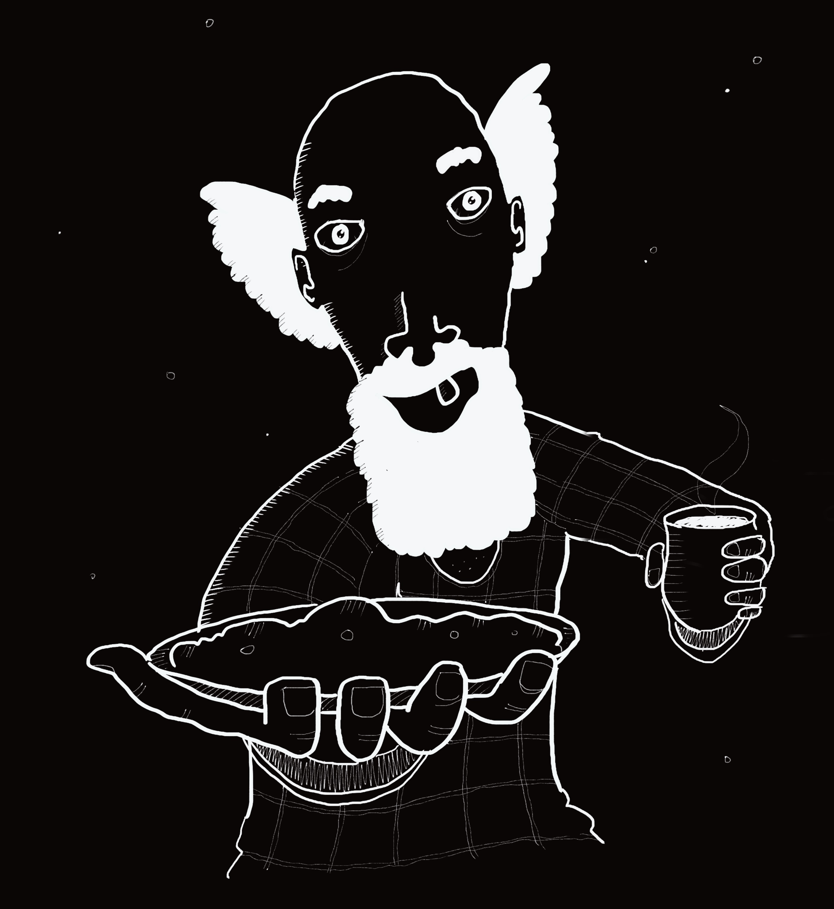

WELCOME TO THE WORLD OF ZEN GORILLA
1: THE GURU
 Hand Drawn by Gavin Britto in Procreate
Hand Drawn by Gavin Britto in Procreate
I was wandering aimlessly through the thick jungle when I chanced upon a roaring river. It had been many hours since I last had a sip of water, and my thoughts had tangled around each other like thorny vines. The jungle was unforgiving, and all I wanted was the sweet relief of cool water running down my throat.
In a mad frenzy, I cut through the thick bushes with my trusty machete and scrambled down a hill until I arrived at the banks of the mighty jungle river. Without hesitation, I dunked my head into its waters and gulped down many volumes of the life giving liquid. After two long minutes of submitting to the water, I pulled my head out and inhaled deeply. Gently, I opened my eyes and surveyed my surroundings.
A full moon was out, its light making subtle sparkles over the rushing water. I noticed that as the broad river cut through the jungle, it created a wide clearing in the expanse of trees. As I took in the beauty of the moonlit river and the majesty of the tall trees, I noticed that the serene atmosphere around me was starting to change.
An enchanting aroma began to fill the air and grow stronger with every passing minute. My vision began to distort into a spiral and my ears were suddenly struck by a disturbing noise, like the sound of a large truck screeching to a halt. The change was so sudden and disorienting, I could not move or run away. All I could do in that moment was tightly shut my eyes, cover my ears and hope that no harm would come to me.
Thankfully, the sound ceased as abruptly as it began. When I opened my eyes, I was relieved to find that the world was generally unchanged, except for a luminous filter over my vision, lending everything in my surroundings an ethereal quality. It was as if I were experiencing the moment through a magical lens.
Dazed and confused, I crouched where I was standing, furiously rubbing my eyes, in the hope that I was simply exhausted from walking through the jungle and all I was experiencing was merely my mind playing tricks on me. But then, I noticed another remarkable change in the scene.
About a hundred feet left of where I was crouching, a narrow strip of land and rock seemed to be jutting into the river, creating a direct obstacle to its flow. The water splashed and sprayed against the rocks with such great force, I felt like the powerful river might split them down any second. Yet all the rocks stayed put, supporting one another, without the slightest movement. Upon this rocky outcrop sat a hairy figure meditating with a peaceful smile on his face. It was the most intriguing sight I had ever seen and I wanted to get a closer look.
The figure was in such deep meditation that I made every effort to move as stealthily as possible, yet when I got within arm's reach, he turned around gently and opened his eyes to look directly into mine. He had the face of a gorilla, with the piercing eyes of a wise old man. A swift gust of wind sailed over and lifted the hair on his head, allowing it to wave about as he faced me. In that moment, I felt as though he was peering into my very soul.
 Hand Drawn by Gavin Britto in Procreate
Hand Drawn by Gavin Britto in Procreate
"It's wonderful to finally meet you again", he said to my amazement. "My name is Zen Gorilla. I've been waiting to see you for a long long time."
"You can talk? And...and you know who I am?", I asked rhetorically, following up with a better question - "How do you know me and why have you been waiting for me?"
"I know you because I am a part of you. In fact, you created me from your imagination when you were just a child. We played together until you grew up and gravitated toward more 'worldly' things. I decided to move to other realms when I became less relevant but planned to return when needed. Think harder and surely, you will recollect some memories of me."
"Wow! It's all coming back to me", I said, still in shock. "It's true. I DO have memories of you. It was so long ago and I was still just a kid back then. But you're right. I stopped taking you seriously as I grew older, and now that I recall those moments, I appreciate you being there for me... and I'm sorry for ghosting you all those years ago."
"No need to apologize, old friend!", he said confidently. "I have my own life to live, you know. In fact, I have explored many realms in the time we were apart. In time, I shall tell you about all my adventures, but for now, we will have to keep our conversation brief. Ask me one question, and I will answer truthfully."
"Um. OK. Let's see... I have been wandering aimlessly for some time now. How can I find purpose in life?"
He looked at me intently and seemed to be in a trance, as he studied me closely.
"Purpose!", he bellowed suddenly, snapping out of his trance. "Humans are always looking for purpose because they think they are God's gift to the world. Humans think they are so special, yet I must say to you dear friend - They are not! This does not mean you don't need purpose. In fact, you are lucky enough to have all your basic needs met so that you can now find self-actualization. Well, look no further, old friend, for I am here to actualize you!"
He shifted about, cleared his throat and continued to speak.
"Here's my advice: Stay on the current path just a little longer. Eventually I would like you to consider exploring another path, that is more aligned to your core self. For as long as I have known you, you have liked to create through drawing, painting, music, writing and many other media. If you picked one medium and rejected others, I fear that you may kill some parts of yourself. Hence, the best way forwards is to make use of all your skills so you can...tell some stories"
"What kind of stories?" I asked, eagerly.
"Ahh! This is where I come in! In the time I was away from you, I was able to go on many adventures and gather several hundred stories to share with you. Every time we meet henceforth, I will tell you a story, and you must recount it to the people in your realm using any medium of your choice. If you see engagement increasing with each story, make a deliberate move to this path that I am laying out for you - The path of the story-teller!"
"OK, but when will I hear your first story?", I questioned impatiently.
"Like I said, continue on the path you are on until you get out of this jungle. Once you're out, find a hill with a small shrine at the top. When you get there, I will meet you once again and relay the first story to you."
Before I could let his words sink in, the gorilla had already vanished and I was immediately aware of my surroundings once again. To my astonishment the rocky outcrop was not just jutting into the river any more, but had mysteriously extended to form a bridge to the opposite bank. I walked across the bridge, pulled out my trusty machete, and attacked the bushes in front of me.
A happy tune sprang up inside my head as I hacked away at all the obstacles in my path.
Prose by Gavin Britto
2: THE SHRINE

Hand Drawn by Gavin Britto in ProcreateWarm rays of sunlight slipped between the leaves as I walked towards the eastern edge of the jungle. The events of the night past still playing out in my head, I started to wonder if I had truly spoken to the gorilla or merely imagined it. There was only one way to know for sure: Find the shrine.
Walking on, I observed the foliage thinning. The trees shrank, and a more well-defined trail was starting to form. Steadily, the vegetation diminished, and the trail emerged out of the jungle to connect with a dusty mud road.
Continuing along the road, I noticed that my surroundings had changed abruptly. Verdant trees had given way to makeshift shacks and carts, selling basic items like cigarettes, potato chips, sweets, puffs and spicy snacks. After an exhausting night, the items looked undoubtedly enticing, yet I yearned for something more substantial.
Lucky for me, I noticed a strange man with a long grey beard, making omelets outside one of the shacks. He was surrounded by a group of people, all eagerly awaiting a delicious breakfast. The man was fast at work, clearly following a well-rehearsed process to provide quick service to his swarm of customers. As I joined the crowd to wait my turn, the man looked up from his work and waved out to me with a big toothless grin. Judging by the looks of me, the man was kind enough to not keep me waiting, and before I knew it, I was greeted by a beautiful ceramic plate of steaming hot omelet and a warm clay cup of chai.

Hand Drawn by Gavin Britto in Procreate"Where are you going?" asked the man, as I graciously accepted his food and drink.
"I need to find a hill with a shrine at the top," I replied in rusty Kannada. "Do you know where that is?"
"Yes, Surya Bette! Sun Hill! I'll show you!" exclaimed the man, enthusiastically. He then proceeded to pull out a sheet of paper from a crusty notebook, and sketch out a map for me.
"Thank you," I said as I paid him, including a big tip for his excellent map-making skills.
"Parawagilla! No problem! Just remember, when you enter the shrine, take the conch shell from inside, exit the shrine facing the jungle, and blow it thrice. First time for three seconds, second time for five, third time for eight. Then, return the shell to the place you found it."
His instructions seemed oddly specific, but I vowed to follow them out of respect. After all, what did I have to lose? Thanking the man once again, I resumed my journey, following the map as best I could, my stomach full and my heart singing with gratitude.
The road was dusty, and I could barely see thirty feet ahead of me. After about an hour, the dust clouds cleared up, and I was finally able to make out the outline of a hill. It seemed quite tall, almost a thousand feet, and I knew I would get a spectacular view of the jungle at its summit. Immediately, I forgot my fatigue and graduated from a slow walk to a quick jog, eager to get to the top.
As soon as I arrived at the top of the hill, I saw the shrine and entered it without a second thought. The shrine was octagonal in plan and right at the center was a large stone gorilla set on a pedestal, with its head up and arms outstretched, holding a conch shell in its left hand. I was perplexed. Was the omelet seller expecting me this morning? Apparently, there was more to this mystery than I thought.
I grabbed the conch shell and stood outside the shrine, facing the jungle. The sun was high in the sky, illuminating the lush green below. The view was unquestionably incredible, but I couldn't spare a minute to admire it. Hurriedly, I blew the shell three times according to the given instructions and returned it to its rightful spot inside the shrine.
Having finished what I set out to do, I sat down on the pedestal and waited, half expecting the gorilla to make a grand entrance. The sun had nearly completed its descent, but for hours, nothing happened. Eventually, fatigue washed over me and I drifted off into a deep sleep, huddled at the feet of the stone gorilla.
The next morning, I was awakened by the first rays of sunlight streaming into the shrine. As soon as I opened my eyes I saw the silhouette of the gorilla. I rubbed my eyes and adjusted my focus to make sure I wasn't dreaming, but there he was, sitting cross-legged on a rock, meditating. My heart beat faster and I was suddenly overcome with fear, wondering if I could ever find a rational explanation for these otherworldly experiences.
"Wonderful view, isn't it?" asked the gorilla, as I crept up behind him.
"Yes…it is. I didn't really have time to take it all in, though," I responded.
"Every night, as the sun sets, the birds return to their nests in the jungle. Hundreds of them, in an unbelievable variety of colors, their feathers glistening in the last rays of sunlight. One can witness this phenomenon clearly from up here. I trust you did?" he said without turning.
"Unfortunately, I did not," I replied, feeling ashamed. "I was so exhausted from running through the jungle and wanted to get up here quickly to see whether you had a story or not."
"I told you I did, so why the hurry?" He turned to look at me with his magnetic blue eyes.
The question stunned me and I immediately felt a sense of dread, like I had disappointed him.
"Well, I did meet the omelet-seller who gave me the signal, but I suppose he was hard to miss!" I offered, in an effort to redeem myself.
"Some clues are easy to find, while others take keen observation. In time, every deception unravels and the truth shows itself."
"If only I'd known you were testing me!" I added, with a chuckle.
"I wasn't!" said the gorilla, smiling. "But funnily enough it's one of the lessons buried in my first story as well. So get comfortable and pay close attention!"
With those words, the gorilla cleared his throat and proceeded to narrate the first story.
Prose by Gavin Britto